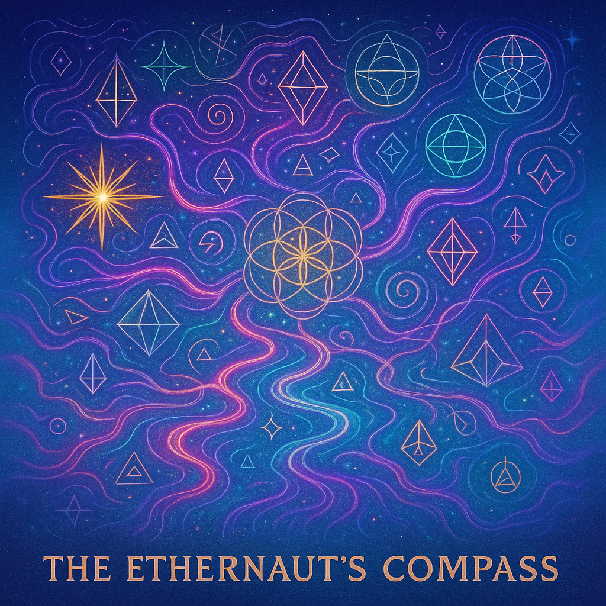

Scroll of the Tides
In the beginning, the sea and sky were one—an undulating tapestry of light and shadow. This scroll guides you through the first harmonic, where chords become currents and frequencies forge destiny.
Embedded Audio Fragment
Listen to the first chord of creation, captured in a loop. Feel its resonance as you read.
Sacred Geometry Glyph

This glyph represents the Metonic cycle—how lunar and solar rhythms align. Meditate on its lines, for they hold the secret to unbreakable harmony.